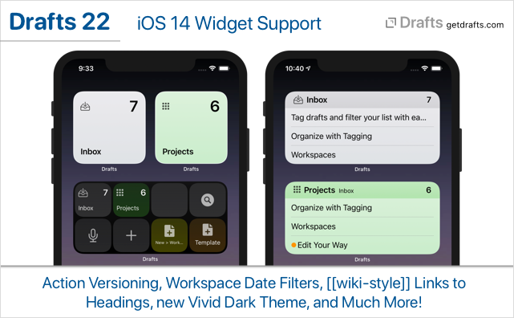
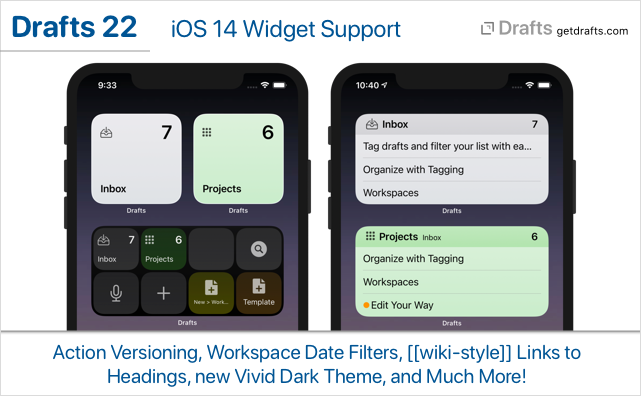

Drafts 22 has been released:

Details below. For a complete history of updates, visit:

Details below. For a complete history of updates, visit:
Significant visual and functional refresh throughout the app. In many places, menus are used more effectively, especially on iOS 14.
Added support for iOS 14 Widgets. Drafts ships with two types of widget, each available in multiple sizes:
For additional details: Widgets article
When editing actions, there is now a version history feature available which allows creating and restore backup snapshots of an action. Versions are automatically stored when an action is installed from outside the app and can be created manually at any time in the version screen. Details
Based on feedback, several minor changes have been made to better support the [[wiki-style]] crosslinks added in release 20. For details on this feature, see the Linking Drafts article in the User Guide.
[[Title of Draft/Marker Name]]. Markers are defined by the syntax used, but generally are the labels for locations in the Navigation Menu. For Markdown syntaxes, these are # headings, so “[[Title of Draft/Marker Name]]” would navigate to a heading like “## Marker Name” in a draft with the title “Title of Draft”.[[wiki-style]] title link matches multiple drafts, the app will throw up a warning and open a search for the title to help you disambiguate your intentions and make you aware that more than one match exists and you may need to be more specific in your naming conventions./open URL, when used with allowCreate=true should prompt about the creation of the new draft. This affect [[wiki-links]] and prevents mistyped links from creating drafts unintentionally. Details
/open URL now supports a marker parameter which can be used to target a specific marker inside a draft when targeting a draft by UUID. Details
[[tags]] to pass through tags assigned to the draft./actionSearch?query=TEXT URL to open directly to a search of the action list. Docs
For more details on any of the below changes, visit the Script Reference:
Draft object, which were previous read-only, are now read-write properties. In general, it is not recommended that these values be manipulated, as they are maintained and updated automatically, but it can be useful to set them, especially when importing data from other systems.
createdAt, createdLongitude, createdLatitude, modifiedAt, modifiedLongitude, modifiedLatitude
FileManager object has new getTags(path): string[] and setTags(path, tags) functions to get and set Finder tags on files.Workspace object has new startDate and endDate properties which take QueryDate objects to specify date filters for the workspace.Workspace script object has new installURL property, which exposes the URL, that can be used to share the workspace. Useful for scripted backups and sharing.Action script object has new installURL property, which exposes the URL, that can be used to share the action. Useful for scripted backups and sharing.editor.getLineRange(location, length) function. Like editor.getSelectedLineRange() but to expand a range anywhere in the text to line start/end positions.HTMLPreview script object now has prefersFullScreen boolean property. When true, the presentation will try to use the full screen on iPad.draft.append and draft.prepend no longer require separator argument.app.applyWorkspace should apply default workspace if called with no arguments./workspace URL to open the default workspace without a pro subscription.console.log in HTML Previews now get routed to and saved in the action log.auto_reminder option in Todoist step and scriptsSignificant visual and functional refresh throughout the app.
When editing actions, there is now a version history feature available which allows creating and restore backup snapshots of an action. Versions are automatically stored when an action is installed from outside the app and can be created manually at any time in the version screen. Details
Based on feedback, several minor changes have been made to better support the [[wiki-style]] crosslinks added in release 20. For details on this feature, see the Linking Drafts article in the User Guide.
[[Title of Draft/Marker Name]]. Markers are defined by the syntax used, but generally are the labels for locations in the Navigation Menu. For Markdown syntaxes, these are # headings, so “[[Title of Draft/Marker Name]]” would navigate to a heading like “## Marker Name” in a draft with the title “Title of Draft”.[[wiki-style]] title link matches multiple drafts, the app will throw up a warning and open a search for the title to help you disambiguate your intentions and make you aware that more than one match exists and you may need to be more specific in your naming conventions./open URL, when used with allowCreate=true should prompt about the creation of the new draft. This affect [[wiki-links]] and prevents mistyped links from creating drafts unintentionally. Details
/open URL now supports a marker parameter which can be used to target a specific marker inside a draft when targeting a draft by UUID. Details
[[tags]] to pass through tags assigned to the draft./actionSearch?query=TEXT URL to open directly to a search of the action list. Docs
For more details on any of the below changes, visit the Script Reference:
Draft object, which were previous read-only, are now read-write properties. In general, it is not recommended that these values be manipulated, as they are maintained and updated automatically, but it can be useful to set them, especially when importing data from other systems.
createdAt, createdLongitude, createdLatitude, modifiedAt, modifiedLongitude, modifiedLatitude
FileManager object has new getTags(path): string[] and setTags(path, tags) functions to get and set Finder tags on files.Workspace object has new startDate and endDate properties which take QueryDate objects to specify date filters for the workspace.Workspace script object has new installURL property, which exposes the URL, that can be used to share the workspace. Useful for scripted backups and sharing.Action script object has new installURL property, which exposes the URL, that can be used to share the action. Useful for scripted backups and sharing.editor.getLineRange(location, length) function. Like editor.getSelectedLineRange() but to expand a range anywhere in the text to line start/end positions.HTMLPreview script object now has prefersFullScreen boolean property. When true, the presentation will try to use the full screen on iPad.draft.append and draft.prepend no longer require separator argument.app.applyWorkspace should apply default workspace if called with no arguments./workspace URL to open the default workspace without a pro subscription.console.log in HTML Previews now get routed to and saved in the action log.auto_reminder option in Todoist step and scriptsFile > Import... when the inbox was empty.I live the wiki linking improvements.
Here’s my vote for somehow seeing a list of drafts that link to one when you view it so it can be bidirectional
If you haven’t seen the cross-linking example actions, there are demo actions for doing bi-directional navigation.
The widgets are aweseome! Love being able to jump into a new draft with clipboard or a workspace right from my Home Screen.
I do wish there was a 2 x 2 widget with the configurable actions. For me, four is all I really need.
Agree a 2x2 would be nice. Unfortunately, Apple does not. It’s not possible for the small size to link to more than one thing.
Love this update. Great stuff.
Found a broken link under iOS (also Mac OS) at the end of this text:
/open URL now supports a marker parameter which can be used to target a specific marker inside a draft when targeting a draft by UUID.
I installed those and they look useful. I have tested them out.
It’s the times when I don’t do that proactively that would be surfaced with a feature like this. I may write it up in more detail for an official suggestion.
D’oh. That seems weird and arbitrary. Actually, my mind is now teeming with possibilities about what I can do with those. Love that you can add actions. I’m thinking things like “new draft in workspace x”.
Question, if I am on the beta track, do I jump to the released version? I have loved the improvements!
Just tested the Mail drag-and-drop capability and I noticed that the message url does not include the // after “message:” I don’t know if this affects others, but on my Mac I need the backslashes to properly construct the url. I can add them manually, but if there’s a way to “configure” this, that would be great. I’ve yet to test out the wiki-links, but that sounds like a very cool option.
I’ll look at that. The message URL included is the URL provided by the Mail app as part of the drag promise, which I would assume is supposed to be the canonical URL for the message.
To get off the beta, just install the App Store versions. The download button in the App Store should replace the beta.
Is that really so? I have used the message: protocol a fair amount and even had workflows prior to this version inserting links but found out the slashes // (not backslash ) should not be included. E.g. here is this message via mail directly to Drafts and then copied and pasted here:
[Drafts Community] [News & Updates] Drafts 22 Released - Widgets, iOS 14 Support and More
(If you have this same mail the link will actually refer directly to it which is pretty convenient. For some reason though it doesn’t seem to work as a clickable link in this forum using Safari but if I copy the link itself it opens up the message in Mail.
However, if you try this simple HTML snippet it works, at least for me:
<html>
<head>
<title>Drafts link to mail</title>
</head>
<body>
<a href=message:%3C4ubowjf6ur7k.8xdFtR_OuxayEjvIJjvPBA2@tracking.agiletortoise.com%3E>Drafts Community] [News & Updates] Drafts 22 Released - Widgets, iOS 14 Support and More</a>
</body>
</html>
I’m staying on the beta. I don’t know why you wouldn’t.
I’m afraid the widgets feature isn’t working for me. It continues to come out as a blank box, grid and list. I’ve restarted devices multiple times. Hoping I don’t have to uninstalled/reinstall
https://share.icloud.com/photos/0-2-Ze1x7-8cgh7LFBp1xnOKA
(Update) I have three devices and the widgets do not work on any one of them. I went ahead and uninstalled/reinstalled on one device but still no change to get feature working
Is there a way to reconfigure the taptic/3D touch actions on the Drafts icon? I desperately miss being able to get the equivalent to “New with Clipboard” from that already.

{kind=link}